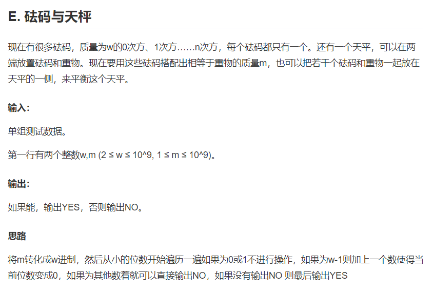

<!DOCTYPE html>
<html>
<head><meta name="generator" content="Hexo 3.8.0">
  <meta charset="utf-8">
  

  
  <title>天平砝码 | 清香白莲素还真</title>
  <meta name="viewport" content="width=device-width, initial-scale=1, maximum-scale=1">
  
  
  
  <meta name="description" content="题目链接：https://ac.nowcoder.com/acm/contest/910/E 1234567891011121314151617181920212223242526#include&amp;lt;stdio.h&amp;gt; int` `main()&amp;#123;    ``int` `t,a,b;    ``scanf``(``&quot;%d&quot;``,&amp;amp;t);    ``while``(t--)">
<meta name="keywords" content="题">
<meta property="og:type" content="article">
<meta property="og:title" content="天平砝码">
<meta property="og:url" content="http://yoursite.com/2019/05/27/天平砝码/index.html">
<meta property="og:site_name" content="清香白莲素还真">
<meta property="og:description" content="题目链接：https://ac.nowcoder.com/acm/contest/910/E 1234567891011121314151617181920212223242526#include&amp;lt;stdio.h&amp;gt; int` `main()&amp;#123;    ``int` `t,a,b;    ``scanf``(``&quot;%d&quot;``,&amp;amp;t);    ``while``(t--)">
<meta property="og:locale" content="zh-Hans">
<meta property="og:image" content="http://yoursite.com/2019/05/27/天平砝码/题目.png">
<meta property="og:updated_time" content="2019-05-27T10:06:31.861Z">
<meta name="twitter:card" content="summary">
<meta name="twitter:title" content="天平砝码">
<meta name="twitter:description" content="题目链接：https://ac.nowcoder.com/acm/contest/910/E 1234567891011121314151617181920212223242526#include&amp;lt;stdio.h&amp;gt; int` `main()&amp;#123;    ``int` `t,a,b;    ``scanf``(``&quot;%d&quot;``,&amp;amp;t);    ``while``(t--)">
<meta name="twitter:image" content="http://yoursite.com/2019/05/27/天平砝码/题目.png">
  
    <link rel="alternate" href="/atom.xml" title="清香白莲素还真" type="application/atom+xml">
  
  
    <link rel="icon" href="/images/default-avatar.jpeg">
  
  
    <link href="//fonts.googleapis.com/css?family=Source+Code+Pro" rel="stylesheet" type="text/css">
  
  <link rel="stylesheet" href="/css/style.css">
  <link rel="stylesheet" href="/css/highlight.css">
</head>
</html>
<body>
  <div id="fullpage" class="mobile-nav-right">
    
      <div id="wrapper" title="图片来自网络">
    
    
      <header id="header">
  <div id="nav-toggle" class="nav-toggle"></div>
  <div class="head-box global-width">
    <nav class="nav-box nav-right">
      
        <a class="nav-item" href="/" title>首页</a>
      
        <a class="nav-item" href="/about" title>素还真</a>
      
        <a class="nav-item" href="/archives" title>归档</a>
      
        <a class="nav-item" href="/essay" title>随笔</a>
      
        <a class="nav-item" href="/poem" title>怜素情如水</a>
      
    </nav>
  </div>
</header>
      <div id="middlecontent" title class="global-width sidebar-right">
        <section id="main"><article id="post-天平砝码" class="article global-container article-type-post" itemscope itemprop="blogPost">
  
    <header class="article-header">
      
  
    <h1 class="article-title" itemprop="name">
      天平砝码
    </h1>
  

    </header>
  
  <div class="article-meta">
    <a href="/2019/05/27/天平砝码/" class="article-date">
  <time datetime="2019-05-27T08:20:09.000Z" itemprop="datePublished">2019-05-27</time>
</a>
    
    
  <ul class="article-tag-list"><li class="article-tag-list-item"><a class="article-tag-list-link" href="/tags/题/">题</a></li></ul>

  </div>
  
    <span id="busuanzi_container_page_pv">
      本文总阅读量<span id="busuanzi_value_page_pv"></span>次
    </span>
  

  <div class="article-inner">
    
    <div class="article-content article-content-doorframe" itemprop="articleBody">
      
        <p></p>
<p>题目链接：<a href="https://ac.nowcoder.com/acm/contest/910/E" target="_blank" rel="noopener">https://ac.nowcoder.com/acm/contest/910/E</a></p>
<figure class="highlight c++"><table><tr><td class="gutter"><pre><span class="line">1</span><br><span class="line">2</span><br><span class="line">3</span><br><span class="line">4</span><br><span class="line">5</span><br><span class="line">6</span><br><span class="line">7</span><br><span class="line">8</span><br><span class="line">9</span><br><span class="line">10</span><br><span class="line">11</span><br><span class="line">12</span><br><span class="line">13</span><br><span class="line">14</span><br><span class="line">15</span><br><span class="line">16</span><br><span class="line">17</span><br><span class="line">18</span><br><span class="line">19</span><br><span class="line">20</span><br><span class="line">21</span><br><span class="line">22</span><br><span class="line">23</span><br><span class="line">24</span><br><span class="line">25</span><br><span class="line">26</span><br></pre></td><td class="code"><pre><span class="line"><span class="meta">#<span class="meta-keyword">include</span><span class="meta-string">&lt;stdio.h&gt;</span></span></span><br><span class="line"> </span><br><span class="line"><span class="keyword">int</span>` `main()</span><br><span class="line">&#123;</span><br><span class="line">    ``<span class="keyword">int</span>` `t,a,b;</span><br><span class="line">    ``<span class="built_in">scanf</span>``(``<span class="string">"%d"</span>``,&amp;t);</span><br><span class="line">    ``<span class="keyword">while</span>``(t--)&#123;</span><br><span class="line">        ``<span class="keyword">bool</span>` `flag=``<span class="literal">true</span>``;</span><br><span class="line">    ``<span class="built_in">scanf</span>``(``<span class="string">"%d%d"</span>``,&amp;a,&amp;b);</span><br><span class="line">    ``<span class="keyword">while</span>``(b)</span><br><span class="line">    ``&#123;</span><br><span class="line">        ``<span class="keyword">int</span>` `temp=b%a;</span><br><span class="line">        ``<span class="keyword">if</span>``(temp==<span class="number">0</span>||temp==<span class="number">1</span>);</span><br><span class="line">        ``<span class="keyword">else</span>` `<span class="keyword">if</span>``(temp == a<span class="number">-1</span>)</span><br><span class="line">            ``b++;</span><br><span class="line">        ``<span class="keyword">else</span></span><br><span class="line">        ``&#123;</span><br><span class="line">            ``flag=``<span class="literal">false</span>``;</span><br><span class="line">        ``&#125;</span><br><span class="line">        ``b=b/a; </span><br><span class="line">    ``&#125;  </span><br><span class="line">    ``<span class="keyword">if</span>``(flag==``<span class="literal">true</span>``)``<span class="built_in">printf</span>``(``<span class="string">"YES\n"</span>``);</span><br><span class="line">    ``<span class="keyword">else</span>` `<span class="built_in">printf</span>``(``<span class="string">"NO\n"</span>``);</span><br><span class="line">    ``&#125;</span><br><span class="line">    ``<span class="keyword">return</span>` `<span class="number">0</span>;</span><br><span class="line">&#125;</span><br></pre></td></tr></table></figure>
<p>或者</p>
<figure class="highlight c++"><table><tr><td class="gutter"><pre><span class="line">1</span><br><span class="line">2</span><br><span class="line">3</span><br><span class="line">4</span><br><span class="line">5</span><br><span class="line">6</span><br><span class="line">7</span><br><span class="line">8</span><br><span class="line">9</span><br><span class="line">10</span><br><span class="line">11</span><br><span class="line">12</span><br><span class="line">13</span><br><span class="line">14</span><br><span class="line">15</span><br><span class="line">16</span><br><span class="line">17</span><br><span class="line">18</span><br><span class="line">19</span><br><span class="line">20</span><br><span class="line">21</span><br><span class="line">22</span><br><span class="line">23</span><br><span class="line">24</span><br><span class="line">25</span><br><span class="line">26</span><br><span class="line">27</span><br><span class="line">28</span><br><span class="line">29</span><br><span class="line">30</span><br><span class="line">31</span><br><span class="line">32</span><br><span class="line">33</span><br><span class="line">34</span><br><span class="line">35</span><br><span class="line">36</span><br><span class="line">37</span><br><span class="line">38</span><br><span class="line">39</span><br><span class="line">40</span><br><span class="line">41</span><br><span class="line">42</span><br><span class="line">43</span><br><span class="line">44</span><br><span class="line">45</span><br><span class="line">46</span><br><span class="line">47</span><br><span class="line">48</span><br><span class="line">49</span><br><span class="line">50</span><br><span class="line">51</span><br><span class="line">52</span><br><span class="line">53</span><br><span class="line">54</span><br><span class="line">55</span><br></pre></td><td class="code"><pre><span class="line">作者：不只划水也出力</span><br><span class="line">链接：https:<span class="comment">//ac.nowcoder.com/discuss/194091</span></span><br><span class="line">来源：牛客网</span><br><span class="line"></span><br><span class="line"><span class="meta">#<span class="meta-keyword">include</span><span class="meta-string">&lt;iostream&gt;</span></span></span><br><span class="line"><span class="meta">#<span class="meta-keyword">include</span><span class="meta-string">&lt;stdio.h&gt;</span></span></span><br><span class="line"><span class="meta">#<span class="meta-keyword">include</span><span class="meta-string">&lt;algorithm&gt;</span></span></span><br><span class="line"><span class="meta">#<span class="meta-keyword">include</span><span class="meta-string">&lt;sstream&gt;</span></span></span><br><span class="line"><span class="meta">#<span class="meta-keyword">include</span><span class="meta-string">&lt;string.h&gt;</span></span></span><br><span class="line"><span class="meta">#<span class="meta-keyword">include</span><span class="meta-string">&lt;set&gt;</span></span></span><br><span class="line"><span class="keyword">using</span> <span class="keyword">namespace</span> <span class="built_in">std</span>;</span><br><span class="line"><span class="function"><span class="keyword">int</span> <span class="title">main</span><span class="params">()</span></span></span><br><span class="line"><span class="function"></span>&#123;</span><br><span class="line">    <span class="keyword">long</span> <span class="keyword">long</span> n,m;</span><br><span class="line">    <span class="keyword">int</span> t,x;</span><br><span class="line">    <span class="keyword">long</span> <span class="keyword">long</span> a[<span class="number">100</span>];</span><br><span class="line">    <span class="built_in">scanf</span>(<span class="string">"%d"</span>,&amp;t);</span><br><span class="line">    <span class="keyword">while</span>(t--)</span><br><span class="line">    &#123;</span><br><span class="line">        <span class="built_in">scanf</span>(<span class="string">"%I64d%I64d"</span>,&amp;n,&amp;m);</span><br><span class="line">        x=<span class="number">0</span>;</span><br><span class="line">        <span class="keyword">int</span> flag=<span class="number">0</span>;</span><br><span class="line">        <span class="built_in">memset</span>(a,<span class="number">0</span>,<span class="keyword">sizeof</span>(a));</span><br><span class="line">           <span class="keyword">while</span>(m&gt;<span class="number">0</span>)</span><br><span class="line">        &#123;</span><br><span class="line">            a[x++]=m%n;</span><br><span class="line">            m/=n;</span><br><span class="line">        &#125;</span><br><span class="line">        <span class="keyword">int</span> win=<span class="number">0</span>;</span><br><span class="line">        <span class="keyword">for</span>(<span class="keyword">int</span> i=<span class="number">0</span>;i&lt;x;i++)</span><br><span class="line">        &#123;</span><br><span class="line">            <span class="keyword">if</span>(a[i]==<span class="number">0</span>||a[i]==<span class="number">1</span>)<span class="keyword">continue</span>;</span><br><span class="line">            <span class="keyword">else</span> <span class="keyword">if</span>(a[i]==n<span class="number">-1</span>)</span><br><span class="line">            &#123;</span><br><span class="line">                <span class="keyword">int</span> k=i+<span class="number">1</span>;</span><br><span class="line">                <span class="keyword">int</span> s=<span class="number">1</span>;</span><br><span class="line">                <span class="keyword">while</span>(s)</span><br><span class="line">                &#123;</span><br><span class="line">                    a[k]+=s;</span><br><span class="line">                    s=a[k]/n;</span><br><span class="line">                    a[k]%=n;</span><br><span class="line">                    k++;</span><br><span class="line">                    <span class="keyword">if</span>(x&lt;k)x=k;</span><br><span class="line">                &#125;</span><br><span class="line">            &#125;</span><br><span class="line">            <span class="keyword">else</span></span><br><span class="line">            &#123;</span><br><span class="line">                flag=<span class="number">1</span>;</span><br><span class="line">                <span class="keyword">break</span>;</span><br><span class="line">            &#125;</span><br><span class="line">        &#125;</span><br><span class="line">        <span class="keyword">if</span>(flag)<span class="built_in">printf</span>(<span class="string">"NO\n"</span>);</span><br><span class="line">        <span class="keyword">else</span> <span class="built_in">printf</span>(<span class="string">"YES\n"</span>);</span><br><span class="line">    &#125;</span><br><span class="line">&#125;</span><br></pre></td></tr></table></figure>

      
    </div>
    
      <footer class="article-footer">
        完
      </footer>
    
  </div>
  
    
<nav id="article-nav">
  <div class="article-nav-block">
    
      <a href="/2019/05/27/hello-world/" id="article-nav-newer" class="article-nav-link-wrap">
        <strong class="article-nav-caption"></strong>
        <div class="article-nav-title">
          
            <div>没有了</div>
          
        </div>
      </a>
    
  </div>
  <div class="article-nav-block">
    
  </div>
</nav>

    
<div id="gitmentContainer"></div>
<link rel="stylesheet" href="https://imsun.github.io/gitment/style/default.css">
<script src="https://imsun.github.io/gitment/dist/gitment.browser.js"></script>
<script>
var gitment = new Gitment({
  owner: '',
  repo: '',
  oauth: {
    client_id: '',
    client_secret: '',
  },
})
gitment.render('gitmentContainer')
</script>

  
  
</article>
</section>
        <aside id="sidebar">
  
    <div class="widget-box">
  <div class="avatar-box">
    
    <h3 class="avatar-name">
      
        素还真
      
    </h3>
    <p class="avatar-slogan">
      脑中真书藏万卷 掌握文武半边天 半神半圣亦半仙 全儒全道是全贤
    </p>
  </div>
</div>


  
    

  
    
  <div class="widget-box">
    <h3 class="widget-title">Tags</h3>
    <div class="widget">
      <ul class="tag-list"><li class="tag-list-item"><a class="tag-list-link" href="/tags/题/">题</a></li></ul>
    </div>
  </div>


  
    
  <div class="widget-box">
    <h3 class="widget-title">Tag Cloud</h3>
    <div class="widget tagcloud">
      <a href="/tags/题/" style="font-size: 10px;">题</a>
    </div>
  </div>

  
    
  <div class="widget-box">
    <h3 class="widget-title">Archives</h3>
    <div class="widget">
      <ul class="archive-list"><li class="archive-list-item"><a class="archive-list-link" href="/archives/2019/05/">May 2019</a></li></ul>
    </div>
  </div>

  
    
  <div class="widget-box">
    <h3 class="widget-title">Recent Posts</h3>
    <div class="widget">
      <ul>
        
          <li>
            <a href="/2019/05/27/hello-world/">(no title)</a>
          </li>
        
          <li>
            <a href="/2019/05/27/天平砝码/">天平砝码</a>
          </li>
        
      </ul>
    </div>
  </div>

  
</aside>
      </div>
      <footer id="footer">
  <div class="foot-box global-width">
    &copy; 2019 素还真 &nbsp;&nbsp;
    Powered by <a href="http://hexo.io/" target="_blank">Hexo</a>
    &nbsp;|&nbsp;主题 <a href="https://github.com/yiluyanxia/hexo-theme-antiquity">antiquity</a>
    <br>
    <script async src="//busuanzi.ibruce.info/busuanzi/2.3/busuanzi.pure.mini.js"></script>
    <span id="busuanzi_container_site_pv">阁下是第<span id="busuanzi_value_site_pv"></span>个访客</span>
  </div>
</footer>
      <script src="//ajax.googleapis.com/ajax/libs/jquery/2.0.3/jquery.min.js"></script>

<script src="/js/jquery-2.0.3.min.js"></script>

  <link rel="stylesheet" href="/fancybox/jquery.fancybox.css">
  <script src="/fancybox/jquery.fancybox.pack.js"></script>


<script src="/js/script.js"></script>


    </div>
    <nav id="mobile-nav" class="mobile-nav-box">
  <div class="mobile-nav-img mobile-nav-top"></div>
  
    <a href="/" class="mobile-nav-link">首页</a>
  
    <a href="/about" class="mobile-nav-link">素还真</a>
  
    <a href="/archives" class="mobile-nav-link">归档</a>
  
    <a href="/essay" class="mobile-nav-link">随笔</a>
  
    <a href="/poem" class="mobile-nav-link">怜素情如水</a>
  
  <div class="mobile-nav-img  mobile-nav-bottom"></div>
</nav>    
  </div>
</body>
</html>